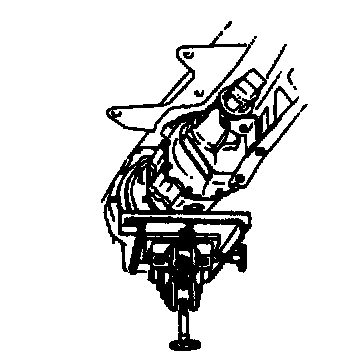
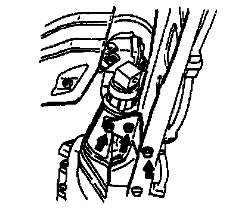
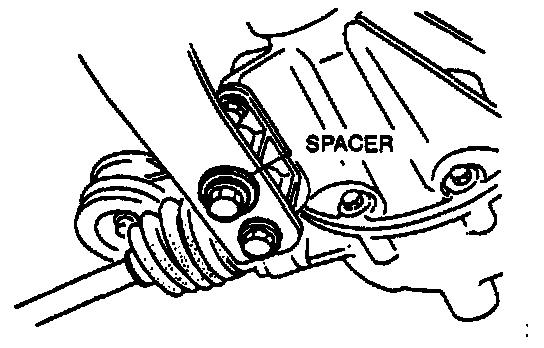
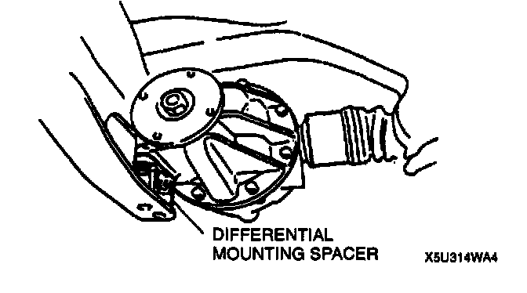
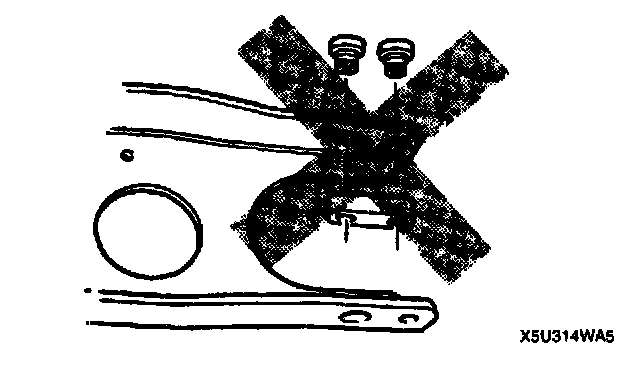
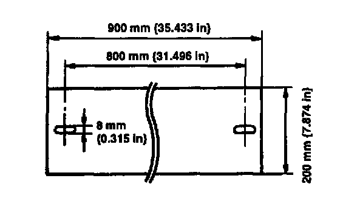
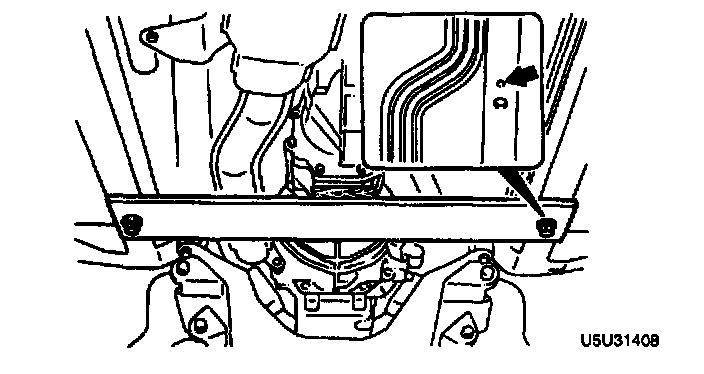

Removal and Installation
DIFFERENTIAL REMOVAL/INSTALLATION
1. Drain the differential oil.
2. Remove the main silencer.
3. Remove in the order indicated in the table.
4. Install in the reverse order of removal.
5. Add the specified oil to the specified level.
Power Plant Frame (PPF), Differential Mounting Spacer Removal Note
1. Disconnect the wire harness from the PPF.

2. Support the transmission with a jack.

3. Remove the PPF bracket.

4. Remove the differential-side bolts, and pry out the spacer.

5. Remove the differential mounting spacer.
Caution:
- Removing the PPF spacers will reduce the performance of the PPF. If the spacers are removed, replace the PPF as an assembly.

6. Remove the transmission-side bolts, and remove the PPF.
Note:
- If the sleeve cannot be removed easily, tap the side of sleeve with a plastic hammer.
7. Remove the sleeve.
8. To prevent damaging the fire wall, crank angle sensor, and engine mount, support the transmission as follows.

1) Prepare a steel plate (as shown in the figure), a wooden block, bolts (M8 x 1.25), and washers.

2) Install the Darts as shown in the figure.
Differential Removal Note
1. Support the differential by using a jack.
2. Lower the differential and move it forward.